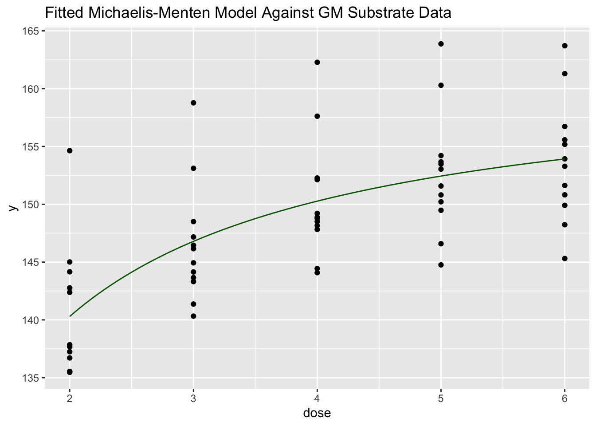

── Attaching core tidyverse packages ──────────────────────── tidyverse 2.0.0 ──
✔ dplyr 1.1.3 ✔ readr 2.1.4
✔ forcats 1.0.0 ✔ stringr 1.5.0
✔ ggplot2 3.4.3 ✔ tibble 3.2.1
✔ lubridate 1.9.2 ✔ tidyr 1.3.0
✔ purrr 1.0.2
── Conflicts ────────────────────────────────────────── tidyverse_conflicts() ──
✖ dplyr::filter() masks stats::filter()
✖ dplyr::lag() masks stats::lag()
ℹ Use the conflicted package (<http://conflicted.r-lib.org/>) to force all conflicts to become errors
library(data.table)
Attaching package: 'data.table'
The following objects are masked from 'package:lubridate':
hour, isoweek, mday, minute, month, quarter, second, wday, week,
yday, year
The following objects are masked from 'package:dplyr':
between, first, last
The following object is masked from 'package:purrr':
transpose
g <-ggplot(data = dPsi_GM, aes(x = dose, y = y)) +geom_point()g
fit0 <-nls(y ~SSmicmen(dose, Vm, K), data = dPsi)fit1 <-nls(y ~SSmicmen(dose, Vm, K), data = dPsi_GM)g +stat_function(fun = SSmicmen, args =list(Vm =tidy(fit1)$estimate[1],K=tidy(fit1)$estimate[2]), colour ="darkgreen")+ggtitle("Fitted Michaelis-Menten Model Against GM Substrate Data")

fit1b <-nls(y ~SSasymp(dose, init, m, plateau), data = dPsi_GM)# g + stat_function(fun = SSasymp, args = list(init = tidy(fit2)$estimate[1],# m=tidy(fit2)$estimate[2], plateau=tidy(fit2)$estimate[3]),# colour = "darkgreen")# Assuming your independent variable is named 'x'# x_vals <- seq(min(dPsi_GM$dose), max(dPsi_GM$dose), length.out = 60)x_vals <-c(rep(2, 12), rep(3, 12), rep(4, 12), rep(5, 12), rep(6, 12))predictions <-data.frame(x = x_vals)# Use the predict function with your model and new data# Note: You might need to adjust this part to fit your specific model and data structurepredictions$y <-predict(fit1b, newdata =list(x = x_vals))g2 <-ggplot(dPsi_GM, aes(x = dose, y = y)) +geom_point() +# Plot the original data pointsgeom_smooth(data = predictions, aes(x = x, y = y), colour ="darkgreen") +# Add the model curvetheme_minimal()+ggtitle("Fitted Asymptotic Regression Model Against GM Substrate Data")g2
`geom_smooth()` using method = 'loess' and formula = 'y ~ x'
plot(fit1b, geno ~resid(.), abline =0)
# the residuals are mostly negative for NT and mostly positive for Tg giving strong evidence that a "genotype" effect should be included in the model
plot(fit1b, pair ~resid(.), abline =0)
#There does not seem to be a pattern correlation of pair and the response as the residuals are both positive and negative for all pairs, so we'll apply pair as a random effect if possible
fit2.nlsList <-nlsList(y ~SSmicmen(dose, Vm, K)|substrate, data = dPsi)fit2.nlme <-nlme(fit2.nlsList)summary(fit2.nlme)
Nonlinear mixed-effects model fit by maximum likelihood
Model: y ~ SSmicmen(dose, Vm, K)
Data: dPsi
AIC BIC logLik
2130.541 2153.689 -1059.271
Random effects:
Formula: list(Vm ~ 1, K ~ 1)
Level: substrate
Structure: General positive-definite, Log-Cholesky parametrization
StdDev Corr
Vm 10.13794735 Vm
K 0.09514946 0.93
Residual 4.75862064
Fixed effects: list(Vm ~ 1, K ~ 1)
Value Std.Error DF t-value p-value
Vm 152.14883 4.220879 343 36.04672 0
K 0.23682 0.042869 343 5.52420 0
Correlation:
Vm
K 0.902
Standardized Within-Group Residuals:
Min Q1 Med Q3 Max
-2.56334476 -0.53130604 -0.02830698 0.60815771 3.04725594
Number of Observations: 350
Number of Groups: 6
plot(fit2.nlme)
qqnorm( fit2.nlme, abline =c(0,1) )
fit3.nlsList <-nlsList(y ~SSmicmen(dose, Vm, K)|sub_geno, data = dPsi)plot( fit3.nlsList, id =0.05, adj =-1 )
## converting nlsList into nlme so we can add random effect later## nlme output also indicates AIC/BIC valuesfit3.nlme <-nlme(fit3.nlsList)fit3.nlme <-update(fit3.nlme, fixed =list(Vm ~ geno), groups =~pair, random = K~1)summary(fit3.nlme)
Nonlinear mixed-effects model fit by maximum likelihood
Model: y ~ SSmicmen(dose, Vm, K)
Data: dPsi
AIC BIC logLik
2428.484 2443.916 -1210.242
Random effects:
Formula: K ~ 1 | pair
K Residual
StdDev: 0.2308241 7.388762
Fixed effects: list(Vm ~ geno)
Value Std.Error DF t-value p-value
Vm.(Intercept) 149.28266 1.2007546 343 124.32404 0
Vm.genoTg 5.43314 0.8443486 343 6.43471 0
Correlation:
Vm.(I)
Vm.genoTg -0.312
Standardized Within-Group Residuals:
Min Q1 Med Q3 Max
-2.5493175 -0.4568479 0.1368382 0.7214966 1.9001842
Number of Observations: 350
Number of Groups: 6
dPsi$pair <-as.factor(dPsi$pair)## adding the random effectfit3.nlme.withrandom <-update(fit3.nlme, fixed =list(Vm ~ geno), groups =~pair, random = K~1) summary(fit3.nlme.withrandom)
Nonlinear mixed-effects model fit by maximum likelihood
Model: y ~ SSmicmen(dose, Vm, K)
Data: dPsi
AIC BIC logLik
2428.484 2443.916 -1210.242
Random effects:
Formula: K ~ 1 | pair
K Residual
StdDev: 0.2308241 7.388762
Fixed effects: list(Vm ~ geno)
Value Std.Error DF t-value p-value
Vm.(Intercept) 149.28266 1.2007546 343 124.32404 0
Vm.genoTg 5.43314 0.8443486 343 6.43471 0
Correlation:
Vm.(I)
Vm.genoTg -0.312
Standardized Within-Group Residuals:
Min Q1 Med Q3 Max
-2.5493175 -0.4568479 0.1368382 0.7214966 1.9001842
Number of Observations: 350
Number of Groups: 6
anova(fit2.nlme, fit3.nlme) # comparing model with genotype and substrate levels or just substrate grouping
Model df AIC BIC logLik Test L.Ratio p-value
fit2.nlme 1 6 2130.541 2153.689 -1059.271
fit3.nlme 2 4 2428.484 2443.916 -1210.242 1 vs 2 301.9431 <.0001
## Figuring out genotype vs. not genotype fixed effect# fit NLS modelnls_GM_geno <-nlsList(y ~SSmicmen(dose, Vm, K)|geno, data = dPsi_GM)# fit NLME (nonlinear mixed effects model)fit_GM_geno <-nlme(nls_GM_geno)fit_GM_geno <-update(fit_GM_geno, fixed =list(Vm ~ geno), groups =~pair, random = (K~1|pair)) # Vm varies w/ geno | group by pair | K varies across levels of pairsummary(fit_GM_geno)
Nonlinear mixed-effects model fit by maximum likelihood
Model: y ~ SSmicmen(dose, Vm, K)
Data: dPsi_GM
AIC BIC logLik
348.6173 356.9947 -170.3087
Random effects:
Formula: K ~ 1 | pair
K Residual
StdDev: 0.3065193 3.215071
Fixed effects: list(Vm ~ geno)
Value Std.Error DF t-value p-value
Vm.(Intercept) 158.47282 1.3376742 53 118.46893 0
Vm.genoTg 5.62613 0.9157648 53 6.14364 0
Correlation:
Vm.(I)
Vm.genoTg -0.302
Standardized Within-Group Residuals:
Min Q1 Med Q3 Max
-2.1912620 -0.7416863 -0.1156655 0.7427093 1.9071265
Number of Observations: 60
Number of Groups: 6
# reduced fit_GM_geno without genotype as fixed effectfit_reduced <-nlme(nls_GM_geno, groups =~pair, random = (K~1|pair), fixed = y ~SSmicmen(dose, Vm, K))
Warning in nlme.nlsList(nls_GM_geno, groups = ~pair, random = (K ~ 1 | pair), :
'nlme.nlsList' will redefine 'fixed', 'data', and 'start'
summary(fit_reduced)
Nonlinear mixed-effects model fit by maximum likelihood
Model: y ~ SSmicmen(dose, Vm, K)
Data: dPsi_GM
AIC BIC logLik
361.1024 369.4798 -176.5512
Random effects:
Formula: K ~ 1 | pair
K Residual
StdDev: 0.0691316 4.214604
Fixed effects: list(Vm ~ 1, K ~ 1)
Value Std.Error DF t-value p-value
Vm 161.75847 1.7219338 53 93.94001 0
K 0.30671 0.0483116 53 6.34864 0
Correlation:
Vm
K 0.754
Standardized Within-Group Residuals:
Min Q1 Med Q3 Max
-1.65805098 -0.82490612 -0.01506359 0.66095926 1.88598285
Number of Observations: 60
Number of Groups: 6
# model comparison using ANOVAanova(fit_GM_geno, fit_reduced)
notes on graph: still seems a little bit like an overfit -> the model is using more of a connect-the-dots approach
however, visually the difference between the two genotypes is pretty obvious, even though the model isn’t the best fit
#visualizing genotype with pair random effectlevels <-seq(2,6, by =0.1)#augmented_predictions <- augPred(fit_reduced, data = dPsi_GM)## alternative to augPred# Generate basic predictionsbasic_predictions <-predict(fit_reduced, newdata = dPsi_GM)# Manually merge or augment predictions as neededdPsi_GM$predictions <- basic_predictions# Extract model coefficientscoefficients <-fixef(fit_reduced)# Generate predictionsdPsi_GM$predicted <-with(dPsi_GM, { Vm_estimate <- coefficients["Vm"] # Extract Vm coefficient K_estimate <- coefficients["K"] # Extract K coefficient predicted <-SSmicmen(dose, Vm_estimate, K_estimate)return(predicted)})
ggplot(dPsi_GM, aes(x = dose, y = y)) +geom_point() +geom_line(aes(y=predicted), color ="blue") +labs(x ="Dose", y ="dPsi", title ="Predicted vs. Observed Values", subtitle ="For Model without Genotype") +theme_minimal()
# Extract coefficients from the modelcoefficients <-fixef(fit_GM_geno)# Define the function used for fitting the modelSSmicmen <-function(dose, Vm, K) {# Define the SSmicmen function using the extracted coefficients# This function should match the one used in your model fitting process Vm * dose / (K + dose)}# Define a function to make predictionspredict_SSmicmen <-function(dose_values, coefficients) { predictions <-SSmicmen(dose_values, coefficients["Vm"], coefficients["K"])return(predictions)}new_dose_values <-seq(min(dPsi_GM$dose), max(dPsi_GM$dose), length.out =100)# Make predictionspredicted_values <-predict_SSmicmen(new_dose_values, coefficients)# Plot the predicted valuesplot(dPsi_GM$dose, dPsi_GM$y, type ="p", col ="blue", xlab ="Dose", ylab ="Response")lines(new_dose_values, predicted_values, col ="red")
# Create a dataframe with new dose valuesnew_data <-data.frame(dose = new_dose_values)genotype_values <-rep(c('Tg', 'NT'), length.out =length(new_dose_values))new_data$geno <- genotype_values# Make predictions for the new data#new_data$predicted <- predict(fit_GM_geno, newdata = new_data) # doesn't work bc new_data does not have `pair` -> how is pair assigned in the data? ## For now: randomly assign `pair` value (1-6) BUT WE NEED TO FIX THIS**** # Calculate base number of rows per pair (integer division)base_rows_per_pair =100%/%6# Calculate the remainder to distribute among the pairsremainder =100%%6# Create a vector with an equal number of each pair, adjusting the last pair to accommodate the remainderpair_values =c(rep(1, base_rows_per_pair),rep(2, base_rows_per_pair),rep(3, base_rows_per_pair),rep(4, base_rows_per_pair),rep(5, base_rows_per_pair),rep(6, base_rows_per_pair + remainder))# Randomly shuffle the pair assignments to distribute them randomly across the datasetset.seed(123) # Setting a seed for reproducibilitypair_values =sample(pair_values)# Assign to new_datanew_data$pair <- pair_values# Make predictions for the new datanew_data$predicted <-predict(fit_GM_geno, newdata = new_data) # Plot the predicted valuesggplot(dPsi_GM, aes(x = dose, y = y, color = geno)) +geom_point() +geom_line(data = new_data, aes(y = predicted)) +labs(x ="Dose", y ="Response", title ="Predicted vs. Observed Values") +scale_color_manual(values =c("blue", "red")) +# Set colors for genotypestheme_minimal()
Graveyard
## figuring out whether pair should be a fixed or random effectnls_GM_geno <-nlsList(y ~SSmicmen(dose, Vm, K)|geno, data = dPsi_GM)fit_GM_without_pair <-nlme(nls_GM_geno)coefficients(fit_GM_without_pair)fit_GM_random <-nlme(nls_GM_geno)fit_GM_random <-update(fit_GM_geno, fixed =list(Vm ~ geno), groups =~pair, random = (K~1|pair)) summary(fit_GM_random)fit_GM_fixed <-nlme(nls_GM_geno)summary(fit_GM_fixed)fit_GM_fixed <-update(fit_GM_fixed, fixed =list(Vm ~ geno, K ~ pair))#write a R function to fit the model
mm.pair <-function(d= dose, V, k, p = pair){ num <- V*dose denom <- K[p] + dosereturn (num/denom)}